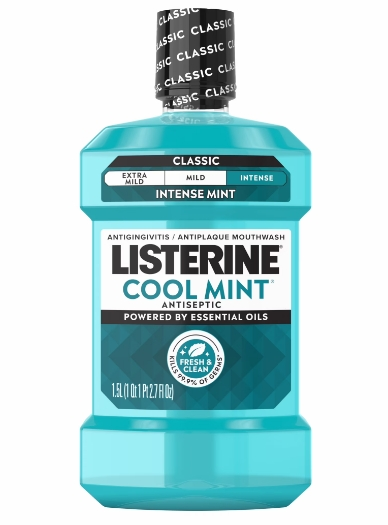
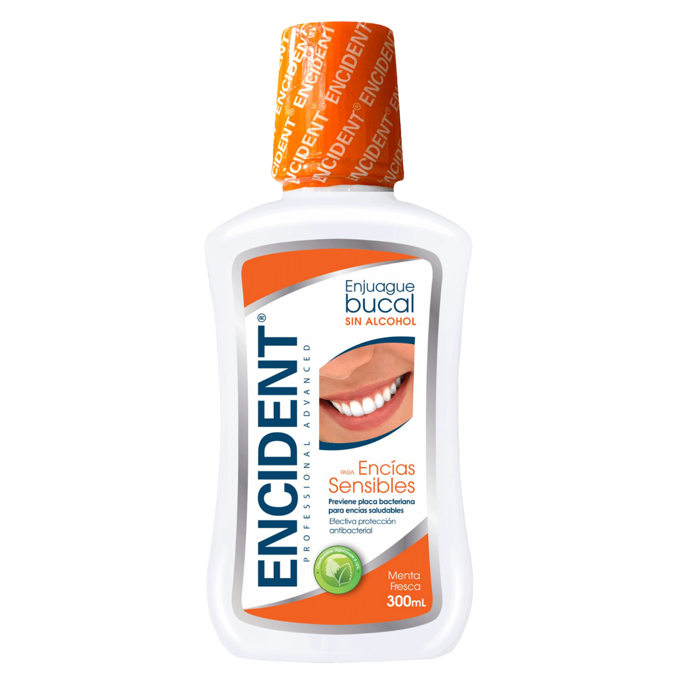
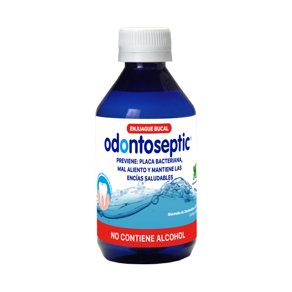

Tema 4
Enjuagues bucales: el aliado extra de tu higiene oral.
Complementan tu higiene oral al reducir la biopelícula bacteriana, mejorar la salud de las encías y prevenir enfermedades como la gingivitis y la caries.
No reemplazan el cepillado ni el hilo dental, son un complemento para tu rutina diaria.
Video destacado
¿Qué son los enjuagues bucales?
Descubre para qué sirven, cómo actúan y por qué son importantes para mantener tus encías sanas.
Video próximamente
¿Qué son los enjuagues bucales?Tipos de enjuagues bucales
Existen diferentes tipos según su composición.
Aceites esenciales
Acción antimicrobiana que ayuda a disminuir la placa bacteriana y prevenir la gingivitis.
Compuestos de amonio cuaternario
Ofrecen un efecto antiséptico moderado que ayuda a controlar los microorganismos.
Fenoles
Debilitan la pared bacteriana, reduciendo la capacidad de las bacterias para adherirse a la superficie dental.
Indicaciones de uso
Los enjuagues bucales están indicados en:
Gingivitis
Enfermedad periodontal
Ortodoncia
Dificultades para mantener higiene
Prevención de caries
Salud gingival óptima
La mayoría contienen agentes antibacterianos o flúor que contribuyen a mantener una buena salud gingival.
Enjuagues con clorhexidina
Se utilizan para controlar la placa bacteriana y la inflamación en gingivitis, periodontitis o después de procedimientos odontológicos.
Concentraciones más empleadas
0,12 % y 0,2 %
Tiempo recomendado
7 a 14 días
Momento de uso
30 minutos después del cepillado
Siempre
Como complemento de la higiene oral
Efectos adversos
El uso de enjuagues bucales puede producir efectos secundarios:
Alteración del gusto
Sensación de ardor
Resequedad o irritación oral
Pigmentación dental*
Aumento de cálculo*
* Principalmente con clorhexidina y uso prolongado.
Usar únicamente bajo indicación del odontólogo.
Marcas disponibles en Ecuador
Algunas marcas comunes y sus principales características:

Listerine®
Contiene aceites esenciales, flúor y cloruro de zinc.

Encident®
Clorhexidina al 0,12 % y fluoruro de sodio.
Colgate Periogard®
Gluconato de clorhexidina.

Odontoseptic®
Clorhexidina al 0,12 %.
La elección del enjuague debe realizarse de acuerdo con tus necesidades y la recomendación de tu profesional odontológico.
Más videos que te pueden interesar
Aprende más sobre cómo cuidar tu salud bucal.
Video próximamente
Enjuagues bucales¿Cuándo y cómo usarlos? Consejos prácticos para obtener mejores resultados.
Video próximamente
ClorhexidinaBeneficios y precauciones: todo lo que necesitas saber antes de usarla.
Video próximamente
Rutina completaCepillado, hilo dental y enjuague: la combinación perfecta.